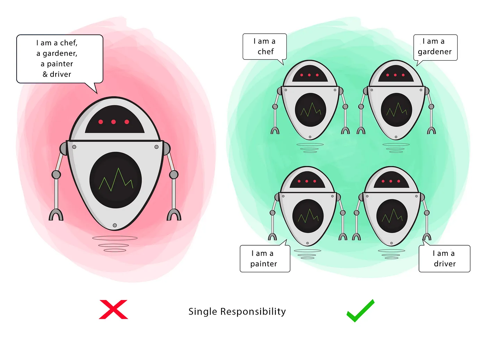
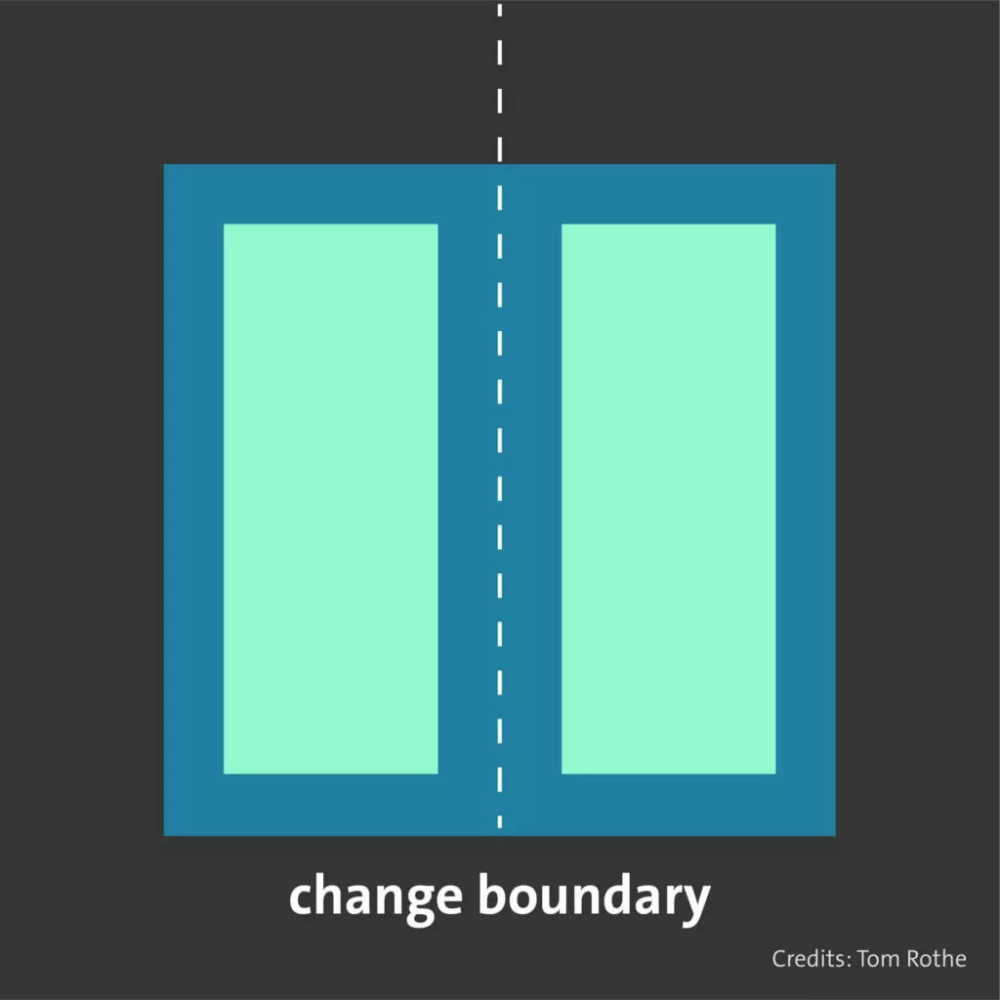
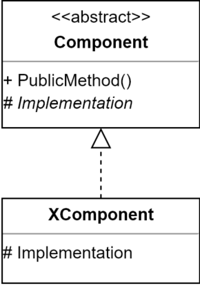

Single responsibility principle
A class should have only one responsibility and there should be only one reason why you want to change the class. Do one thing and do it well!
Is this correct?
%%{init: {'theme': 'dark', 'themeVariables': { 'darkMode': true }}}%%
classDiagram
class Person{
+String name
-save()
}
This Person class has two jobs
- Manage the person’s property.
- Store the person in the database.
Is this correct?
%%{init: {'theme': 'dark', 'themeVariables': { 'darkMode': true }}}%%
classDiagram
Person <|-- PersonDB
class Person{
+String name
}
class PersonDB{
-save()
}
Separate the Person class into two classes.
- The Person class is responsible for managing the person’s properties.
- The PersonDB class is responsible for storing the person in the database.
How to spot violations
When designing classes, you should put related methods that have the same reason for change together. In other words, you should separate classes if they change for different reasons.
Some signs of violations
- If statements and switch statements (can have multiple reasons to change where each case represent one responsibility)
- Monster methods (does more than one thing)
- God class (everything in a single class)
Benefits
-
The code is easier to understand (does only one thing)
- We spend 90% of our time as software developer reading code, so it’s pretty important to be able to understand it and reason about it very fast.
- The code is easier to test (less test cases)
- The code is less fragile (changes are isolated) and therefore easier to maintain
- The code is more reusable (the code should be reusable without modification)
- The code becomes more decoupled
References
- https://konstantinlebedev.com/solid-in-react/
- https://ducmanhphan.github.io/2020-01-17-Understanding-about-SOLID-part-1/
- https://www.pythontutorial.net/python-oop/python-single-responsibility-principle/

The open-closed principle states that a class, method, and function should be open for extension but closed for modification.

But what does that mean?
Simply, it means that if your business requirements change you shouldn’t modify the existing code (closed for modifications). Instead, you should add a new code that extends the existing code without affecting it (open for extension).
How can this be achieved?
- The object-oriented programming way to do this is using inheritance: create a subclass and override any desired methods and properties.
- An elegant way to avoid breaking the principle, if applicable, is to use interfaces as parameters for classes and implement our logic using those interfaces (strategy pattern).
Is this correct?
%%{init: {'theme': 'dark', 'themeVariables': { 'darkMode': true }}}%%
classDiagram
Person <|-- PersonStorage
class Person{
+String name
}
class PersonStorage{
-save_to_database()
-save_to_json()
}
class Person:
def __init__(self, name):
self.name = name
def __repr__(self):
return f'Person(name={self.name})'
class PersonStorage:
def save_to_database(self, person):
print(f'Save the {person} to database')
def save_to_json(self, person):
print(f'Save the {person} to a JSON file')
if __name__ == '__main__':
person = Person('John Doe')
storage = PersonStorage()
storage.save_to_database(person)
%%{init: {'theme': 'dark', 'themeVariables': { 'darkMode': true }}}%%
classDiagram
Person <-- PersonStorage
PersonStorage <|-- PersonJSON
PersonStorage <|-- PersonDB
class Person{
+String name
}
class PersonStorage{
-save()
}
class PersonJSON{
-save()
}
class PersonDB{
-save()
}
from abc import ABC, abstractmethod
class Person:
def __init__(self, name):
self.name = name
def __repr__(self):
return f'Person(name={self.name})'
class PersonStorage(ABC):
@abstractmethod
def save(self, person):
pass
class PersonDB(PersonStorage):
def save(self, person):
print(f'Save the {person} to database')
class PersonJSON(PersonStorage):
def save(self, person):
print(f'Save the {person} to a JSON file')
if __name__ == '__main__':
person = Person('John Doe')
storage = PersonDB()
storage.save(person)
The purpose of the open-closed principle is to make it easy to add new features (or use cases) to the system without directly modifying (breaking) the existing code.
How to spot violations
You are violating this principle if you directly work with a concrete implementation instead of an abstraction. The violation becomes visible when you must extend existing code to accommodate new functionality.
Some signs of violations
- You have private methods that almost do the same thing (but with a slight variation in the implementation)
- You use (a lot of) ifs to control behavior, e.g. doing something the old way or the new way.
- You use an abstract class but check for the concrete implementation to control flow (methods that adjust logic based on instance types)
Warning?
Premature optimization can introduce uncessary complexity. If you extend the export class when you have just pdf then we are introducing unnecessary complexity
Benefits
- Reduce testing of existing code. The less you change the existing code, the less it would introduce new bugs.
- Reduce the cost of a business change requirement.
Template Method Pattern
Create an abstract class containing the base logic, and create implementations of it for different behavior. If you want to add new behavior, you simply create a new class, derive from the base class and add the functionality.

Decorator Pattern
If you want to extend functionality (do the original thing and something extra before and/or after) but not want to change the existing class.
Example in React
Example in React

Strategy Design Pattern
One way is to create an interface (or abstract class) for the behavior, implement the interface for a certain behavior and use the interface from the calling class.

The strategy design pattern is a great example that achieves the OCP in an elegant way. It is one of the most useful design patterns.
References
- https://blog.mayallo.com/open-closed-principle-the-hard-parts
- https://thevaluable.dev/open-closed-principle-revisited/
- https://stackoverflow.com/questions/59016/what-is-the-meaning-and-reasoning-behind-the-open-closed-principle
- https://www.devonblog.com/software-development/solid-violations-in-the-wild-the-open-closed-principle/
- https://ezzeddinabdullah.com/post/solid-principles-ocp-py/
- https://ericbackhage.net/clean-code/solid-the-open-closed-principle/
- https://www.devonblog.com/software-development/solid-violations-in-the-wild-the-open-closed-principle/
- https://waldemar.bearblog.dev/open-closed-principle/
- https://michalgodkowicz.medium.com/how-to-make-your-python-code-maintainable-with-the-open-close-principle-1860fecc8ec0
If a derived class is to be implemented, the base class must be extended without changing the behavior of the base function
What does that mean?
In simpler terms, subclasses must behave like base classes.
Benefits
- Security that an implementation can be replaced without changing its behavior.
Each class should be focused on one aspect or topic only
What does that mean?
The Interface Segregation Principle deals with the separation or decoupling of classes. In the Open-Closed Principle, we learned to work with interfaces. However, interfaces are not without problems either, as they usually tend to get bigger and bigger. As a result, it becomes increasingly difficult to provide a complete implementation as more and more code needs to be added.
The solution?
Do not let interfaces become large in the first place and divide them into many small interfaces beforehand. This allows much more targeted interfaces to be defined externally.
Benefits
-
️
- Simplifies reuse, testing, and maintenance by sharing responsibilities
- Insulates classes from errors by introducing clear boundaries
- Allows functions to be replaced without having to understand related classes
- Lowers cognitive load by isolating topics
- Focuses attention on a single aspect
Dependency Inversion Principle
Higher level classes should not depend on lower level classes
References
- https://camao-tec.com/en/solid-principles-easily-explained/
- https://www.pythontutorial.net/python-oop/python-open-closed-principle/